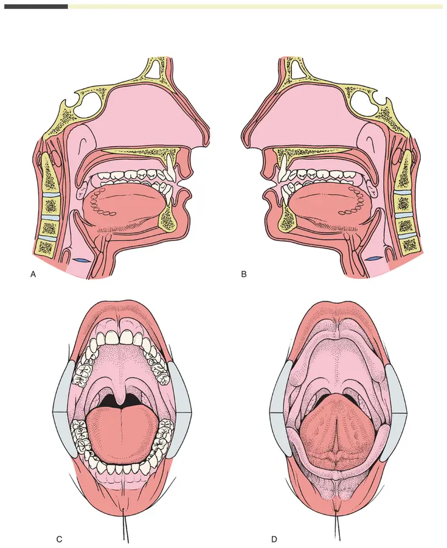

نسخه استخراجشده؛ ترجمه یا تأیید علمی انجام نشده است. وضعیت: captured
معاینه بهطور کلاسیک فرایندی توصیف میشود که شامل چهار جزء است: مشاهده (inspection)، لمس (palpation)، دق (percussion)، و سمع (auscultation).

ولی در ناحیهی سر و گردن، سهم این چهار برابر نیست:
و چرا مشاهده باید اول بیاید؟ دلیلش دقیق است: مشاهدهی زودهنگام امکان توصیف ضایعه را پیش از دستکاری فراهم میکند، چون برخی ضایعات چنان شکنندهاند که هر نوع دستکاری میتواند به خونریزی، پارگی ضایعهی پُر از مایع، یا از دست رفتن بافتهای سطحی سستچسبیده بینجامد — و این، هر معاینهی بعدی را بیاعتبار میکند.
و پیش از هر چیز، سه کار مستندسازی: پس از کامل شدن معاینه، توصیفی دقیق از تمام یافتههای عینی و ذهنی باید در پرونده ثبت شود؛ یک ترسیم یا شمای گرافیکی از محل، جهت، شکل کلی و ابعاد ضایعه کمککننده است؛ و عکس دیجیتال باکیفیت برای مستندسازی مفید است. این جزئیات به تو یا متخصص ارجاعی اجازه میدهد سیر ضایعه را در طول زمان بسنجید.
نوع سؤال: ساخت کلمه · 8 خانه
حروف منبع: ا · چ · ی · ق · ش · ر · ک · ل